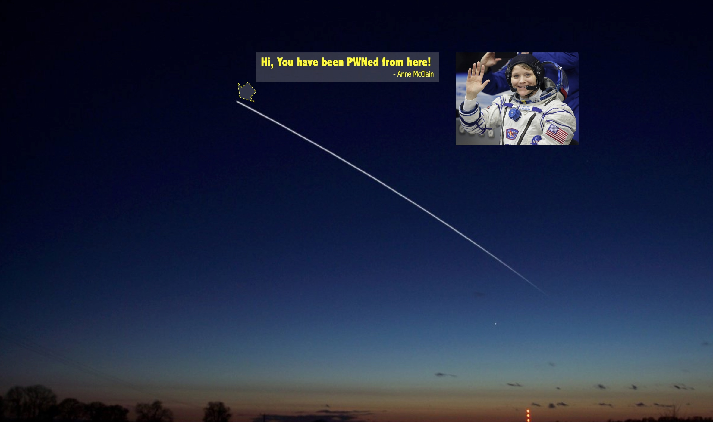

公开报道的第一例发生在外太空的“黑客事件”
历史性的奇葩案例
今天有人在群里贴了一个新闻：
美国前空军情报官员 Summer Worden 和 NASA 宇航员 Anne McClain 是一对同性伴侣。
有一天 Summer Worden 注意到她的银行账户被未经许可访问了。访问她的电脑用的是 NASA 相关的网络。在一番调查之后，她怀疑是她的前任，宇航员 Anne McClain，从国际空间站上黑入她的银行账户。你一定想不到在太空中都可以做什么了，一名 NASA 宇航员被指控在国际空间站上黑入她的前任的银行账户。
这个奇怪的指控是针对美国宇航局宇航员 Anne McClain 的，她与她的前任 Summer Worden 卷入了一场激烈的离婚战。
《纽约时报》的标题就很有意思 —— 《地球上一场激烈的离婚战是如何导致“太空犯罪”的》这个案例真是很有意思。
从管辖权来说，国际空间站运行在联合国和平利用外层空间委员会的定义外太空空间。按照相关决议，各国都没有主权，且不得提出主权要求。既然任何国家都没有主权，那看起来遵循航天器所属国的法律更为合理。但偏偏国际空间站是多个国家共同建造，虽然有新闻说在美国、俄罗斯、欧盟、日本、加拿大商定的法律框架内，国家法律适用于太空的人和财产。但是 …… 到底应该遵循哪国的法律呢？？
而且根据相关新闻来看，这个是一个非授权访问账号的案例，只涉及到一个账号，而且没有实际的损失。如果在中国，这案子估计从一开始就很可能没法立案 😓 新闻里面说她们是离婚（Divorce）…… 这在中国也是一开始就不成立的。😓
一个案子同时涉及到法律管辖权、同性恋婚姻、离婚及财产分割、网络犯罪等等一系列法律问题，同时还创造了历史 —— 真是奇葩的案例 😂

sbilly
主要关注 信息安全、网络安全、系统架构、计算机、网络、开发、科技、制造等科技领域